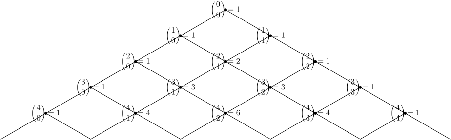
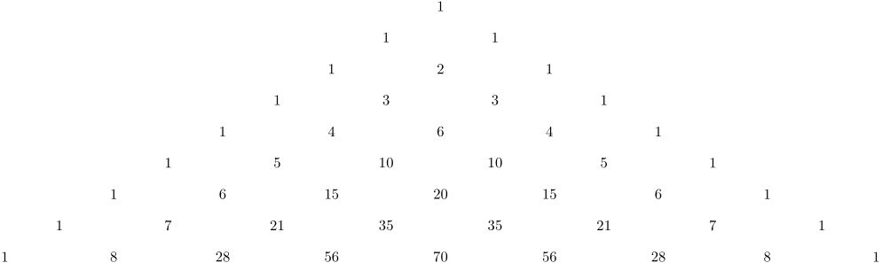

Pascal's Triangle is a triangula array of numbers which is well-known in mathematics. The number at the n-th row and r-th column in the array is the value of combination :
{n \choose k}
or
\binom{n}{k}
More detailed explanation, you may read wikipedia.
We draw Pascal's triangle using MetaFun and Lua. It can be done by the help of Hans.
First, we define a function to calculate the combination with Lua.
lua code for calculation
The functions MP.p_ncr(n,r) and MP.p_ncr_x() are provided for better and simpler code.
-
\startluacode local function fact (n) if n <= 0 then return 1 else return n * fact(n-1) end end local function ncr(n,r) return fact(n)/(fact(r)*fact(n-r)) end userdata.P = { fact = fact, ncr = ncr, } function MP.p_ncr(n, r) mp.print(ncr(n,r)) end function MP.p_ncr_x() mp.print(ncr(mp.scan.pair())) end \stopluacode
-

Drawing Pascal's triangle with lines
There are 3 different ways of calculating the value of combination tt.
-
\startluacode local function fact (n) if n <= 0 then return 1 else return n * fact(n-1) end end local function ncr(n,r) return fact(n)/(fact(r)*fact(n-r)) end userdata.P = { fact = fact, ncr = ncr, } function MP.p_ncr(n, r) mp.print(ncr(n,r)) end function MP.p_ncr_x() mp.print(ncr(mp.scan.pair())) end \stopluacode \startMPcode numeric n,r,u,dx,dy,tt,final; u := 1.8cm; path p, q; pair A,now; A := dir(210)*u; dy := ypart A; dx := -2*(xpart A); for n=0 upto 4: for r=0 upto n: % tt := lua("mp.print(P.ncr(" & decimal n & "," & decimal r & " ))"); % tt := lua.MP.p_ncr(n,r); tt := runscript("MP.p_ncr_x()") (n,r) ; now := n*A + (r*dx,0); dotlabel(textext("\dm {\binom {" & decimal n & "}{" & decimal r & "} = " & decimal tt & "}"),now); draw (now+A) -- now -- (now+A+(dx,0)); endfor; endfor; \stopMPcode
- 
Drawing Pascal's triangle of numbers
-
\startluacode local function fact (n) if n <= 0 then return 1 else return n * fact(n-1) end end local function ncr(n,r) return fact(n)/(fact(r)*fact(n-r)) end userdata.P = { fact = fact, ncr = ncr, } function MP.p_ncr(n, r) mp.print(ncr(n,r)) end function MP.p_ncr_x() mp.print(ncr(mp.scan.pair())) end \stopluacode \startMPcode numeric n,r,u,dx,dy,tt,final; u := 1.2cm; path p, q; pair A,now; A := dir(210)*u; dy := ypart A; dx := -2*(xpart A); for n=0 upto 8: for r=0 upto n: % tt := lua("mp.print(P.ncr(" & decimal n & "," & decimal r & " ))"); % tt := lua.MP.p_ncr(n,r); tt := runscript("MP.p_ncr_x()") (n,r) ; now := n*A + (r*dx,0); label(textext("$" & decimal tt & "$"),now); endfor; endfor; \stopMPcode
- 